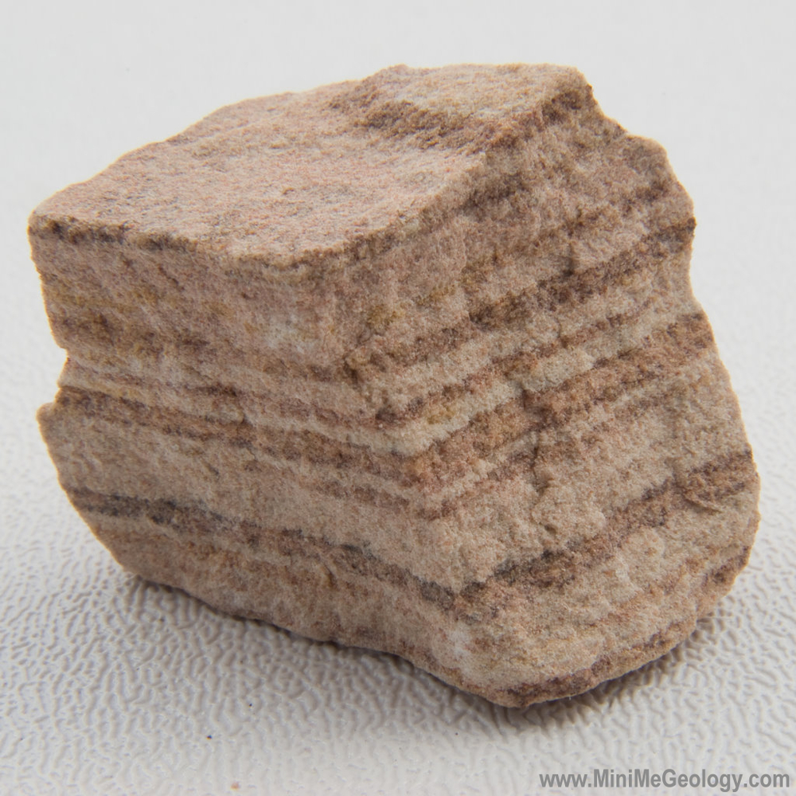
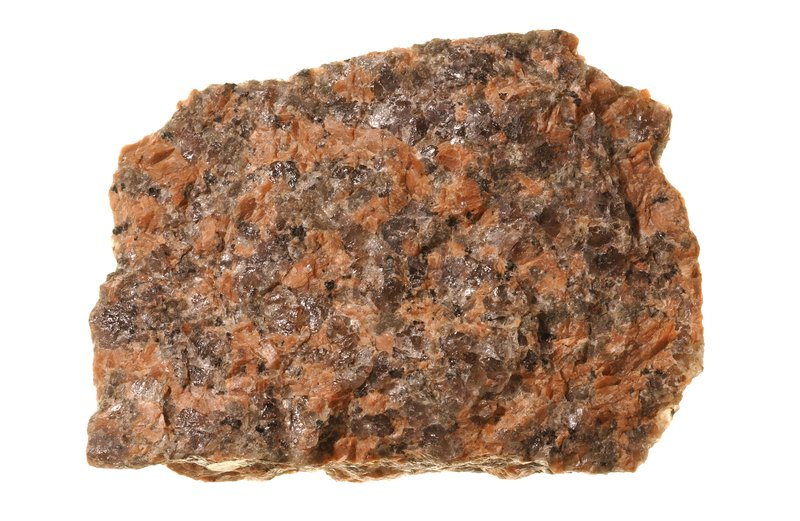
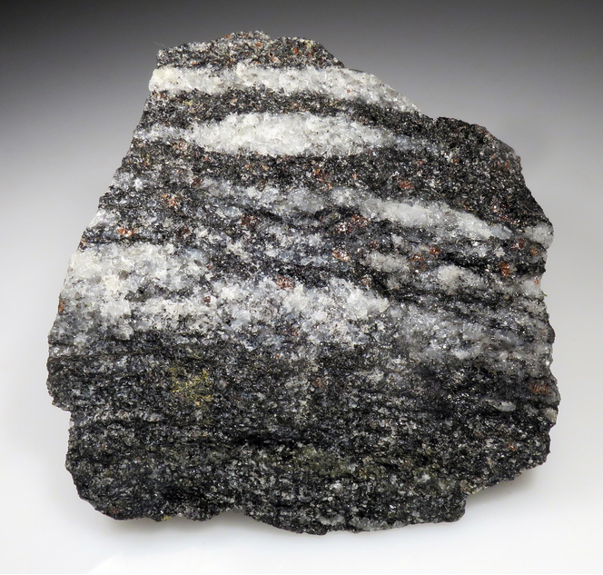

Sedimentary is the secretary of adopt a rock foundation, please direct any questions or concerns to their email Sedimentary@adoptarock.com
Igneous is in charge of taking care of our rocks to ensure they are happy and healthy at all times
Metamorphic is the head of the adoption process, they are the busiest out of the three of our staff. We hope you get a chance to meet them!
